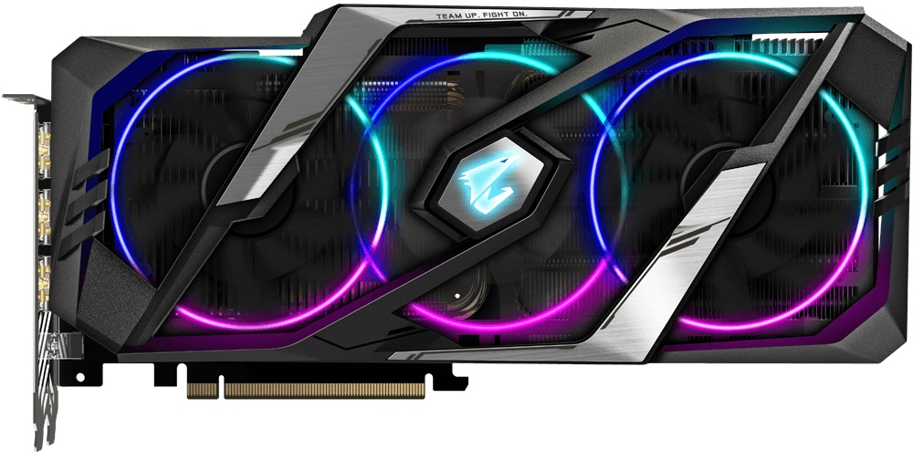

Видеокарта Gigabyte GeForce RTX 2080 SUPER AORUS 8G
{kind=link}
Краткое описание товара
Высокопроизводительная предтоповая игровая видеокарта из семейства моделей GeForce RTX
Подробное описание товара
Отличается наличием заводского разгона графического процессора и использованием фирменной трехслотовой системы охлаждения WindForce 3X на основе шести композитных медных тепловых трубок с технологией прямого контакта, трех больших вентиляторов с оптимизированной формой лопастей и технологией 3D Active, переводящей карту в полностью бесшумный режим пассивного охлаждения при отсутствии серьезной нагрузки. Видеокарта Gigabyte GeForce RTX 2080 SUPER AORUS 8G позиционируется как продукт премиум класса, предназначенный для комплектации топовых геймерских систем верхней ценовой категории, работающих с мониторами
Память |
GPU |
Подключение |
|
8 ГБ, GDDR6, 15500 МГц |
NVIDIA GeForce RTX 2080 SUPER, 1860 МГц |
PCI-E v3.0 |
Разъемы |
Питание |
Длина |
|
HDMI, DisplayPort |
8 + 8 pin |
290 мм |
Показать основные характеристики
Характеристики
-
Память
8 ГБ, GDDR6, 15500 МГц
-
GPU
NVIDIA GeForce RTX 2080 SUPER, 1860 МГц
-
Подключение
PCI-E v3.0
-
Разъемы
HDMI, DisplayPort
-
Питание
8 + 8 pin
-
Длина
290 мм
Показать все характеристики
Основное
- Подключение
PCI-E v3.0
Графический процессор
- Модель GPU NVIDIA GeForce RTX 2080 SUPER
- Объем памяти 8 ГБ
- Тип памяти GDDR6
- Разрядность шины 256 бит
- Частота работы GPU 1860 МГц
- Частота работы памяти 15500 МГц
- Техпроцесс 12 нм
- Макс. разрешение 7680×4320 пикс
Разъемы подключения
- HDMI 3 шт
- Версия HDMI
v. 2.0 - DisplayPort 3 шт
- Версия DisplayPort
v. 1.4 - USB C 1 шт
Программная часть
- Версия DirectX 12
- Версия OpenGL 4.0
- Поддержка VR
- Потоковых процессоров 3072
- Текстурных блоков 192
Общее
- Макс. подключаемых мониторов 4
- Поддержка CrossFire/SLI
- Охлаждение активное (кулер)
- Кол-во вентиляторов 3 шт
- Подсветка
- Синхронизация подсветки Gigabyte RGB Fusion
- Дополнительное питание 8 + 8 pin
- Рекомендуемая мощность БП от 650 Вт
- Занимаемых слотов 3
- Длина видеокарты 290 мм / 290×134×60 /
- Официальный сайт gigabyte.com
- Маркировка производителя
GV-N208SAORUS-8GC